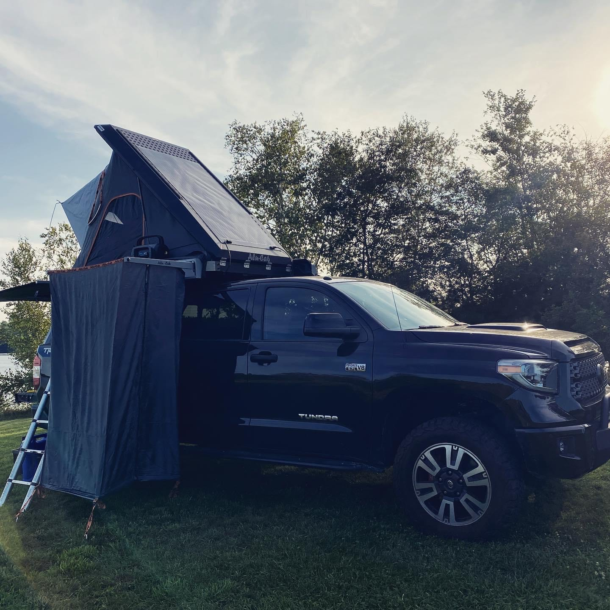
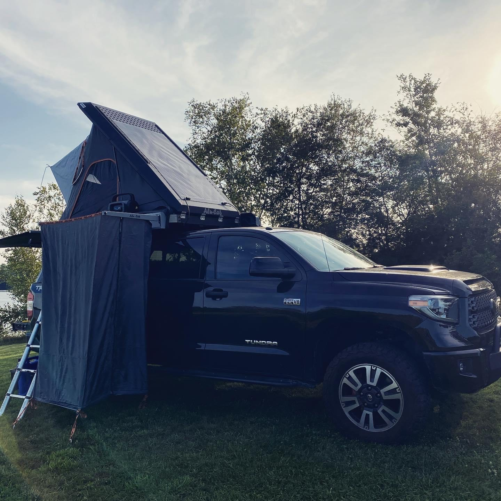

What is "Overlanding"?
Overlanding is actually a specific type of traveling that is beginning to take the country by storm. It can be seen below in the picture of our Toyota Tundra that we have outfitted with gear that is made all over the world so that you're able to essentially live out of your vehicle! Overlanding typically consists of having a "pop-up" tent installed on the roof of your vehicle so that you're able to sleep in a nice and comfortable bed anytime, anywhere! There are many different add-ons for vehicles that make it much more convenient to live out of such as things like a drop-down shower, portable grill, or a cover that encloses the entire back-end of the vehicle with a tent to have a private and secure area! Some of these things can be seen on our vehicle here!
 
